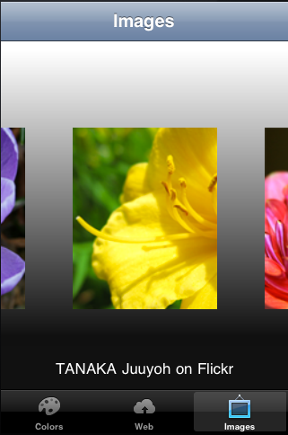

This example application demonstrates many of the important features of MoSync's NativeUI Library. The library provides a set of C++ classes for handling native user interface components (buttons, toolbars, list boxes, etc.). Under the hood, the library makes use of the C functions in MoSync's Widget API. In the latest version of this example we also demonstrate banner ads.
This example works on all platforms supported by the NativeUI Library (see Feature/Platform Support).
| Colors screen on Android | Images screen on Android | Web View screen on Android |
|  | | |
| Colors screen on iOS (iPhone) | Images screen on iOS | Web View screen on iOS |
| Colors screen on WP7 | Images screen on WP7 | Web View screen on WP7 |
This example is included in the MoSync SDK installation in the /examples folder. For information on importing the examples into your workspace, see Importing the Examples.
This application example shows how to use various native widgets (UI components) in a MoSync application. This includes a tab screen, a list view, a web view, and a custom view for an image swiper composed of several widgets.
The example also shows how to use placeholders and strings in the resource definition file. In the /UIWrapper folder is a class library that wraps the MoSync widget system for NativeUI on Android, iPhone and Windows Phone 7.You can use this library in your own applications, and extend it as needed, but note that this is an example library, and is not yet fully documented and does not fully support all features of the NativeUI Widget API.
For the full documentation of the MoSync NativeUI, see the documentation in the package for the include file IX_WIDGET.h and the overview for the Widget API.
The main UI widget in the application is a TabScreen, which has three screens (tabs):
Some techniques demonstrated by the example include:
In the MoSync 3.0 version of this example application, we include a banner advertisment created using the MoSync Advertising Library and API:
 | |
| Advertising banner on iOS | Advertising banner on Android |